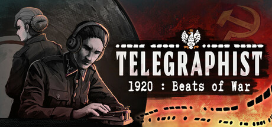
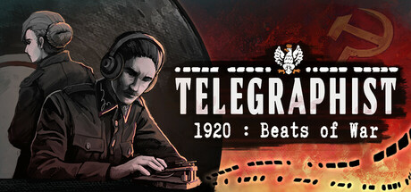
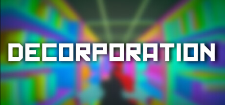
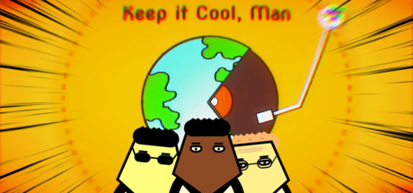
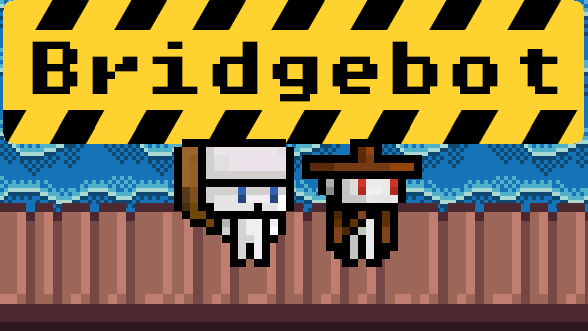
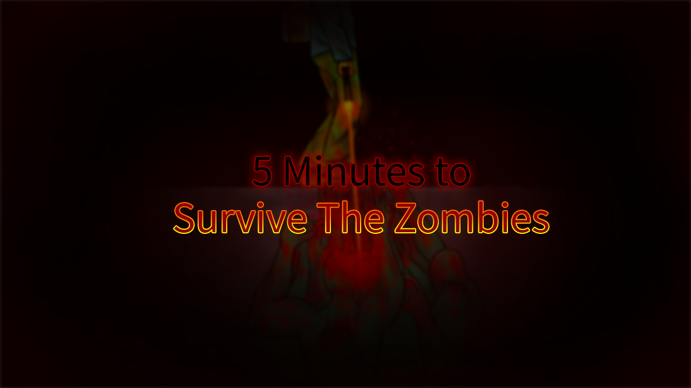
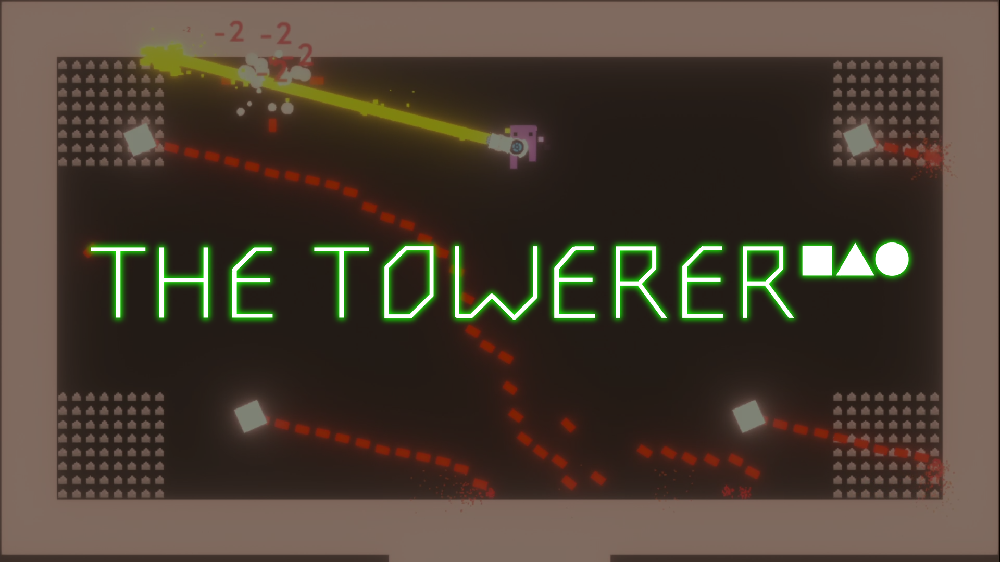

Telegrafista 1920 - Pieśni Wojny
2023 - Obecnie
Rytmiczna gra z naciskiem na narrację. Opowiada historię telegrafisty w trakcie wojny polsko-bolszewickiej.
Game Designer Proofreader QA Tester2023 - Obecnie
Rytmiczna gra z naciskiem na narrację. Opowiada historię telegrafisty w trakcie wojny polsko-bolszewickiej.
Game Designer Proofreader QA Tester2022
Arcade'owa strzelanka FPS z elementami roguelike. Surrealistyczna, satyryczna i o szybkim tempie.
Game Designer QA Tester Tworzenie dodatkowych materiałów2021 - 2022
Stylowa, zręcznościowa gra o inwazji ogromnych liter z kosmosu. Fabuła parodiująca amerykańskie filmy akcji i science fiction.
QA Tester Proofreader2020
Strzelanka top-down z elementami gry tower defense. Zrobiona w ramach Game Jamu ZostanWDomuRobGry 2020
Game Designer Unity Developer2019
Gra survivalowa z edytorem poziomów i limitem czasowym. Zrobiona w ramach Game Jamu Dallas Dreamhack 2019
Game Designer Unity Developer2019
Gra roguelike z mnóstwem różnych broni i ulepszeń. Dopracowana, skupiona na ciekawej i przyjemnej rozgrywce.
Junior Game Designer QA TesterTechnik IT | Marzec 2024 - Obecnie
Subkontraktor w biurze NOKIA Kraków. Wsparcie pracowników oraz utrzymywanie architektury IT.
Realizowanie zleceń IT dla firm zewnętrznych.
Stworzenie wewnętrznej platformy do zarządzania bazą danych pracowników.
Game Designer, Proofreader | Styczeń 2022 - Obecnie
Sporządzanie dokumentacji, testowanie gier oraz pomoc w tworzeniu materiałów marketingowych i tłumaczeń anglojęzycznych.
Informatyka Stosowana | 2024 - Obecnie
Technik Informatyk | 2019 - 2023
Email: contact@brunotalaga.com
LinkedIn: linkedin.com/in/bruno-talaga
GitHub: github.com/w4ty